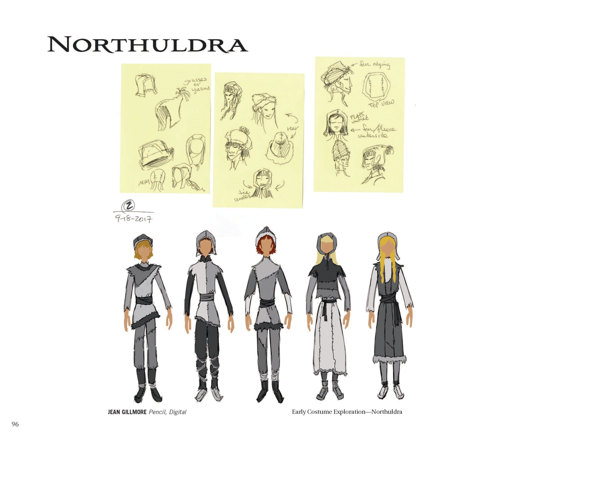

北境民族（Northuldra）是亲近自然、长期户外、和平但动作矫健敏捷的游牧民族，最终戏服与真实萨米人（Sámi）合作设计。服饰用六边形蜂窝图案与羊毛保暖层，主色橙红+紫红+金，主图腾金色小麦穗。他们的驯鹿与斯文同物种、有亲缘感。主要人物包括：叶拉娜（北境领袖）、蜂蜜玛琳（沉稳坚强的北境女性）、赖德（蜂蜜玛琳之弟，高能爱玩，与克里斯托夫速友）。北境民族是「与自然共生」的化身——他们尊重自然、理解自然、与自然和谐共处，是「人类与自然关系」的「理想模式」。